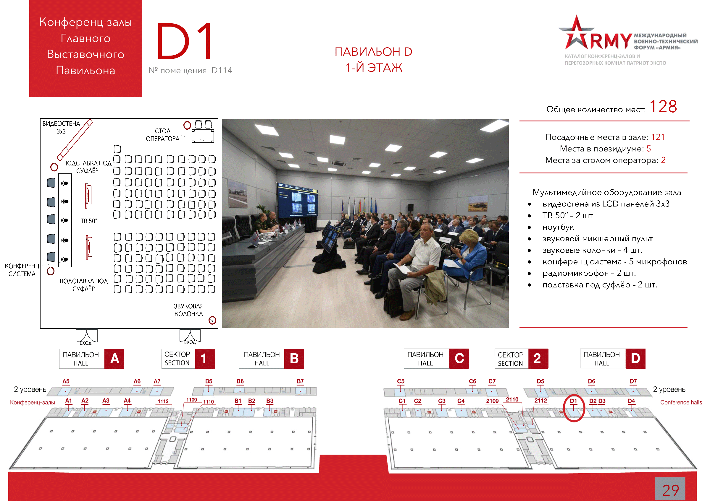

«Российская наука в интересах диверсификации ОПК»
: 25.08.2020
: 15:00 - 19:00
: Конференц-зал D1
: Департамент инноваций перспективных исследований Министерства науки и высшего образования РФ
: Начальник отдела Департамента инноваций и перспективных исследований Министерства науки и высшего образования Российской Федерации Шарапов Игорь Борисович. Тел: +7(495)547-1298 доб. 2011, e-mail: sharapovib@minobrnauki.gov.ru
Цели конференции:
- определить наиболее перспективные направления научно-технического сотрудничества между институтами Минобрнауки России и предприятиями российского оборонно-промышленного комплекса с целью диверсификации их деятельности и привлечения к реализации национальных проектов;
- обозначить критерии оптимального участия ОПК в нацпроектах для повышения качества выпускаемой продукции;
- разработать меры для структур Минобрнауки России и Вооружённых Сил Российской Федерации по совместному укреплению научного обмена, целевой подготовке кадров и повышению квалификации управленческого и инженерного персонала с целью решения задач по диверсификации производства;
- определить формы взаимодействия институтов Минобрнауки России с оборонно-промышленными предприятиями;
- представить последние результаты исследовательских работ организаций Минобрнауки России для возможного их применения в интересах ВС РФ.
Модератор: Директор Департамента инноваций и перспективных исследований Министерства науки и высшего образования Российской Федерации, к.э.н. Медведев Вадим Викторович.
Вопросы для обсуждения:
- национальные проекты как инструмент поддержки диверсификации ОПК;
- механизмы государственной поддержки диверсификации ОПК;
- создание центров трансфера технологических решений двойного назначения;
- роль регионов в диверсификации ОПК.
Предполагаемые результаты:
- перечень направлений сотрудничества в интересах диверсификации деятельности предприятий ОПК;
- перечень проблемных вопросов, сдерживающих активизацию участия оборонно-промышленных предприятий в национальных проектах;
- предложения по взаимодействию для повышения качества совместных разработок, востребованности выпускаемой продукции, укрепления научных связей и кадрового потенциала;
- перечень технологических решений, обеспечивающих создание новых образцов изделий в интересах ВС РФ;
- предложения в проект протокольного решения мероприятия научно-деловой программы.
